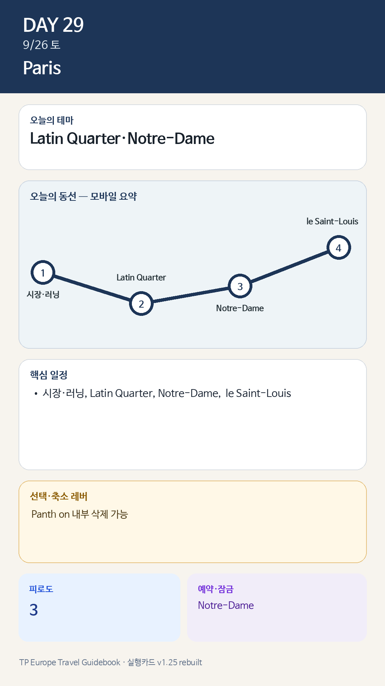

☰
Day 29 · 9/26 토 · Paris
일정
지도
트래커
Day 29 · 9/26 토 · Paris
📖 이날의 챕터 일정
🗺️ Paris 실행지도
🗓️ 전체 데일리 목록

카드의 지도영역은 일정 순서를 보여주는 개요이며 내비게이션이 아닙니다. 실제 도보·운전 경로는 Google Maps에서 다시 계산하세요.
← Day 28
Day 30 →
🏠
홈
📅
일정
📍
오늘
🗺️
지도
📋
트래커
↑